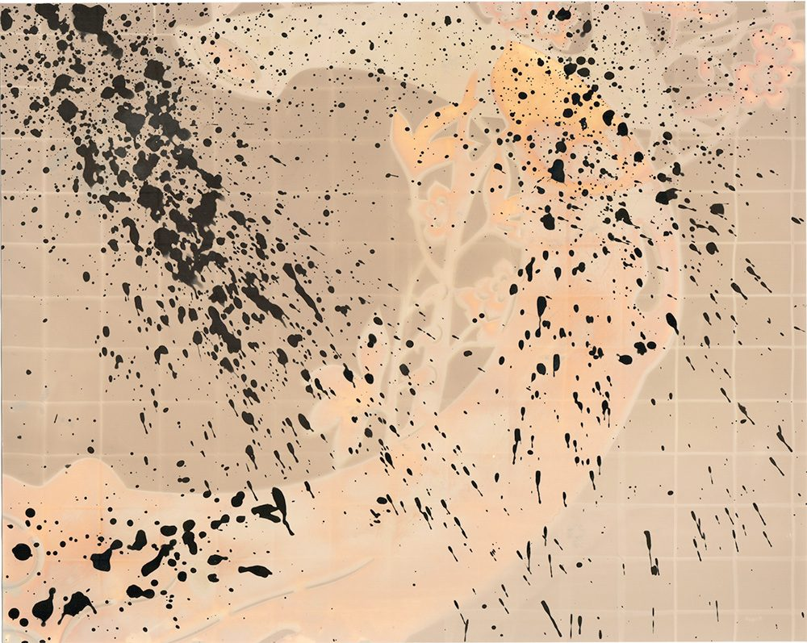
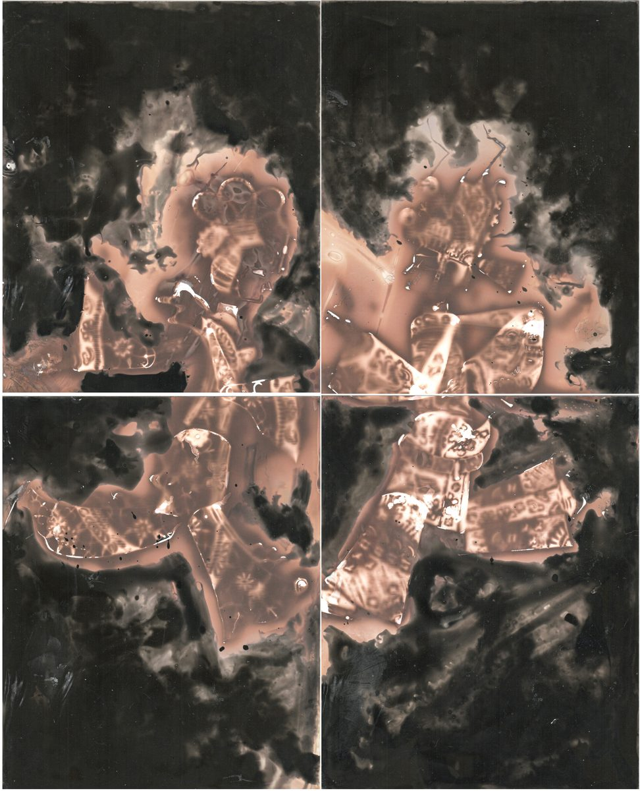

影戏


简介
《影戏》系列作品传统皮影为基础，通过直接在相纸上进行紫外线曝光和显影液绘画，探索图像生成的新方式。以皮影作为底片，将皮影运动的过程曝光于相纸上，显影液被充当成颜料的作用反应于图像上，通过探索皮影的媒介特性，试图引发观众对影像生成与表达方式的思考，整个创作过程中，皮影作为引入的媒介，其独特性在语言上更偏向影像，而非简单的工具化。作品通过对传统民俗艺术形式的重新诠释与融合，作者试图打破传统与当代之间的界限，挖掘摄影艺术的新可能性。在影像和皮影的叙事交织中，创造出一种超越传统的艺术语言，探索摄影的边界与可能性。


